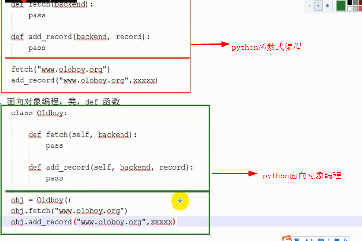
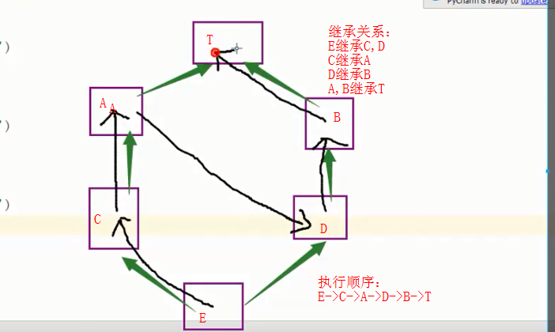
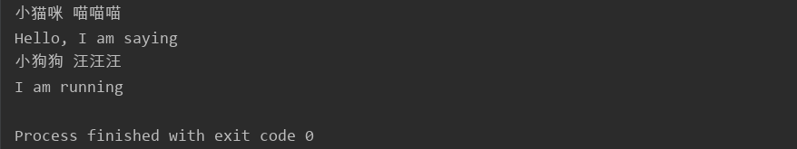
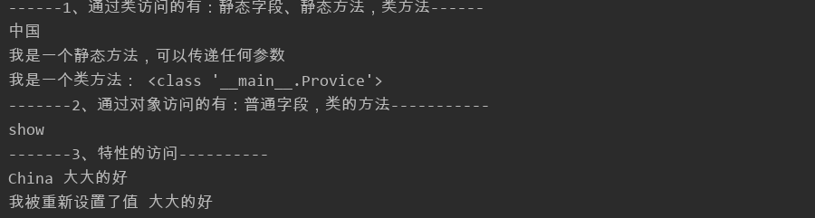

一、面向对象简介
1、面向对象不是所有的情况都适用
2、面向对象编程
a.定义类
class 类名:
def 方法1(self, 参数名):
方法体
b.根据类创建对象，使用对象去执行类中的方法
obj = 类名()
obj.方法名
3、self,形参，python内部传递
4、函数式编程与面向对象式编程的区别

示例：
#!/usr/bin/env python
# -*- coding:utf-8 -*-
"""
面向对象编程初识
"""
#先定义一个类
class Hello():
#定义一个方法
def sayHell(self, name):
print('欢迎您！' + name)
#创建一个对象
obj = Hello()
obj.sayHell('yusheng_liang')
二、面向对象--封装
应用场景：
1、当同一类型的方法具有相同参数时，直接封装到对象即可
2、把类当做模板，创建多个对象（对象内封装的数据可以不一样）
3、类名+括号
自动执行类中的__init__方法：创建了一个对象
在__init__方法中执行具体封装的操作
__init__有一个特殊名字：构造方法(初始化)
示例一：面向对象之封装，非主流的方式
#!/usr/bin/env python
# -*- coding:utf-8 -*-
"""
封装，非主流的方式
"""
class Foo():
def add_foo(self):
print(self.name) #打印已经封装好的对象属性
def del_foo(self):
print(self.name)
#创建一个对象
obj1 = Foo()
#在对象中封装数据
obj1.name = 'yusheng_liang'
#执行方法，执行过程中可以根据self去obj1中取已经封装在里面的数据
obj1.add_foo()
示例二：面向对象之封装，使用构造方法的方式封装数据
#!/usr/bin/env python
# -*- coding:utf-8 -*-
"""
封装，使用构造方法的方式封装数据
"""
class Foo():
def __init__(self, args):
"""
构造方法
:param args:
"""
self.name = args
def add_foo(self):
print(self.name) #打印已经封装好的对象属性
def del_foo(self):
print(self.name)
#创建一个对象，实例，并且将yusheng_liang封装到对象中
obj1 = Foo('yusheng_liang')
# #在对象中封装数据
# obj1.name = 'yusheng_liang'
#执行方法，执行过程中可以根据self去obj1中取已经封装在里面的数据
obj1.add_foo()
三、面向对象--继承
1、派生类可以继承基类中所有的功能
2、派生类和基类同时存在相同的功能时，优先找派生类的
3、python类可以同时继承多个类（C#/java不可以），用逗号隔开，优先找自己的功能，再在继承类中从左到右的顺序查找功能
4、多继承时的查找顺序如下：

示例：
#!/usr/bin/env python
# -*- coding:utf-8 -*-
"""
面向对象之继承
"""
#定义一个父类，又叫基类
class Animals:
def say(self):
print('Hello, I am saying')
def run(self):
print('I am running')
#定义子类，又叫派生类，在括号中写上父类名
class Cat(Animals):
def __init__(self, name):
self.name = name
def sing(self):
print(self.name + ' 喵喵喵')
#定义子类，又叫派生类，在括号中写上父类名
class Dog(Animals):
def __init__(self, name):
self.name = name
def sing(self):
print(self.name + ' 汪汪汪')
cat1= Cat('小猫咪')
cat1.sing()
cat1.say()
dog1 = Dog('小狗狗')
dog1.sing()
dog1.run()示例结果：

四、面向对象--多态，多种形态
python本身支持多态
#!/usr/bin/env python
# -*- coding:utf-8 -*-
"""
多态
"""
class Foo:
def f1(self):
print('Foo')
class Bar:
def f1(self):
print('Bar')
def func(arg):
print(arg)
func(Foo())
func(Bar())
补充：
查找源码的过程（self.xxxx(), 从底层开始找）
执行父类的构造方式：
super(当前类, self).init()
父类.__init__(self,xxx)
五、面向对象的进阶
5.1、利用反射查看面向对象成员归属
1 #!/usr/bin/env python
2 # -*- coding:utf-8 -*-
3 """
4 利用反射查看面向对象成员归属
5 """
6
7 class Foo:
8
9 def __init__(self, name):
10 self.name = name
11
12 def show(self):
13 print('show')
14
15 # 反射：以字符串的形式去对象（模块）中操作其成员
16 # 当反射对象为一个类时，只能找类里的成员
17 obj = hasattr(Foo, 'show1')
18 print(obj)
19
20 #当反射的对象为一个对象时，即可以找对象，找类的成员
21 obj1 = Foo('yusheng_liang')
22 ret = hasattr(obj1, 'name')
23 print(ret)
24 ret1 = hasattr(obj1, 'show')
25 print(ret1)
5.2、面向对象类成员之静态字段，静态方法，类方法
#!/usr/bin/env python
# -*- coding:utf-8 -*-
"""
面向对象类成员之静态字段，静态方法，类方法
"""
class Provice:
#静态字段
country = "中国"
def __init__(self, name):
#普通字段，对象中
self.name = name
#普通方法，类中
def show(self):
print('show')
#静态方法，没有self
@staticmethod
def static_obj(arg1, arg2):
print('我是一个静态方法，可以传递任何参数')
#类方法
@classmethod
def class_obj(cls):
print('我是一个类方法：', cls)
#特性，将方法伪造成一种字段
@property
def end(self):
tmp = "%s 大大的好" %self.name
print(tmp)
#特性的设置值
@end.setter
def end(self,value):
self.name = value
# 1、通过类访问的有：静态字段、静态方法，类方法
print('------1、通过类访问的有：静态字段（每个对象都有一份）、静态方法（无需使用对象封装的内容），类方法------')
print(Provice.country) #静态字段
Provice.static_obj(1, 2) #静态方法
Provice.class_obj() #类方法
print("-------2、通过对象访问的有：普通字段（每个对象都不同的数据），类的方法（普通方法，使用对象中的数据）-----------")
# 2、通过对象访问的有：普通字段，类的方法
obj = Provice("广东")
ret = obj.show()# 3、特性的访问
print('-------3、特性的访问----------')
obj1 = Provice("China")
ret1 = obj1.end
#设置end的参数值
obj1.end="我被重新设置了值"
print(obj1.end)
实例结果：

5.3、面向对象之成员修饰符
成员修饰符：公有和私有
私有的，自己好使，其他的谁都不好使
#!/usr/bin/env python
# -*- coding:utf-8 -*-
"""
面向对象之成员修饰符
静态字段，普通字段，静态方法，普通方法，类方法，
"""
class Foo:
xo = "xo"
__ox = "我是ox"
def __init__(self, bk):
self.backend = bk
def fetch(self):
print(Foo.__ox)
#静态方法的修饰符调用
obj = Foo('123')
obj.fetch()
六、面向对象的特殊成员
6.1、特殊成员--call
实现了__call__方法的对象，相当于重载了（），可以实现调用功能。
1 class A():
2 def __call__(self,name):
3 print("%s is running!" % name)
4
5 a = A()
6 a("people")
7 结果：
people is running!
6.2、特殊成员之setitem
设置给定键的值
6.3、特殊成员之getitem
返回键对应的值。
6.4、特殊成员之delitem
删除给定键对应的元素。
6.5、特殊成员之iter
1 class Foo:
2
3 def __iter__(self):
4 yield 1
5 yield 2
6 yield 3
7
8 obj = Foo()
9 #如果执行for对象时，自动会执行对象的iter方法，生成器
10 for i in obj:
11 print(i) 总结：方法的原理就是：当我们对类的属性item进行下标的操作时，首先会被__getitem__()、__setitem__()、__delitem__()拦截，从而进行我们在方法中设定的操作，如赋值，修改内容，删除内容等等。